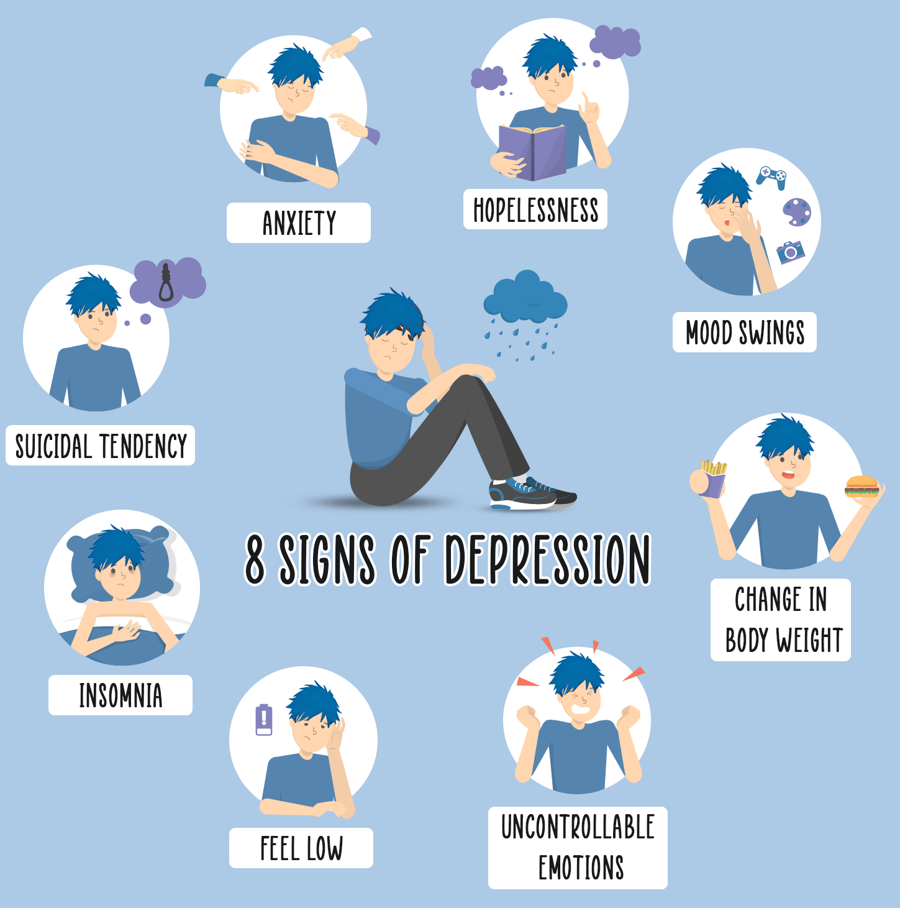
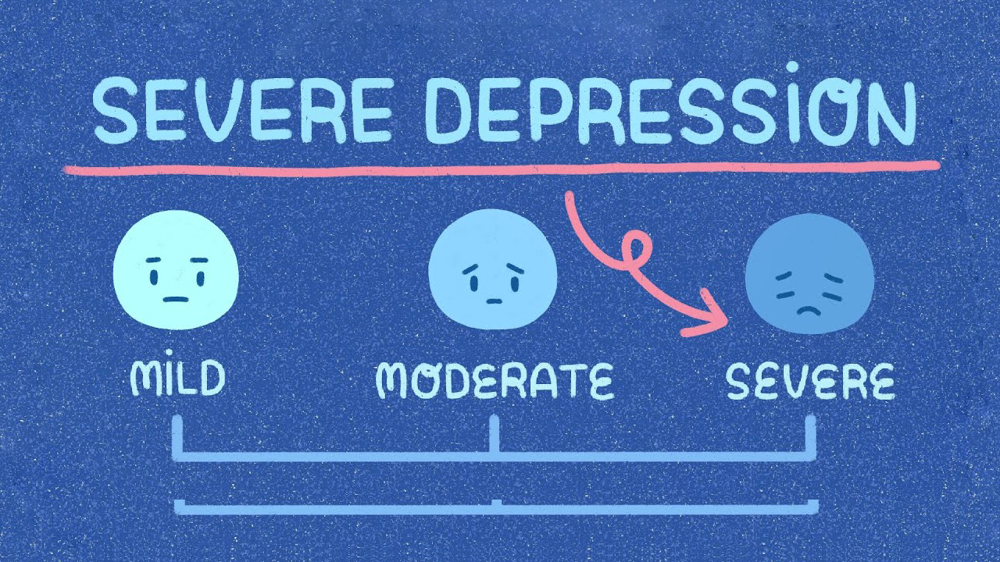

What exactly are the signs of depression?
The symptoms of depression can be complex and vary widely between people. If you're depressed, you may feel sad, hopeless and lose interest in things you used to enjoy.
Symptoms persist for weeks or months and are bad enough to interfere with your work, social life and family life.
There are many other symptoms of depression and you're unlikely to have all of those listed on this page.

Psychological symptoms
- continuous low mood or sadness
- feeling hopeless and helpless
- having low self-esteem
- feeling tearful
- feeling guilt-ridden
- feeling irritable and intolerant of others
- having no motivation or interest in things
- finding it difficult to make decisions
- not getting any enjoyment out of life
- feeling anxious or worried
- having suicidal thoughts or thoughts of harming yourself
Physical symptoms
- moving or speaking more slowly than usual
- changes in appetite or weight (usually decreased, but sometimes increased)
- having low self-esteem
- constipation (changes to how you poo, including not pooing as often or finding it hard to poo)
- unexplained aches and pains
- lack of energy
- low sex drive (loss of libido)
- disturbed sleep (for example, finding it difficult to fall asleep at night or waking up very early in the morning)
Social symptoms
- avoiding contact with friends and taking part in fewer social activities
- neglecting your hobbies and interests
- having difficulties in your home, work or family life

Severities of depression
Depression can often come on gradually, so it can be difficult to notice something is wrong. Many people try to cope with their symptoms without realising they're unwell. It can sometimes take a friend or family member to suggest something is wrong.
Doctors describe depression in adults as either less severe (mild) or more severe (moderate or severe), based on:
- the symptoms, including how often you get symptoms and how bad they are
- how long depression lasts
- the impact on your daily life